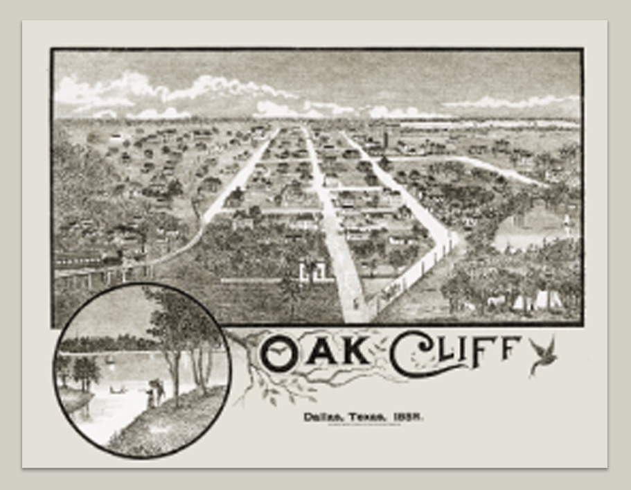

What is Oak Cliff Cultural District?
Oak Cliff Cultural District (OCCD) is a geographically defined cultural district located in Oak Cliff, Dallas, District 1 which formally came together in 2023 to establish itself as a destination for travelers across North Texas and beyond. OCCD is filled with restaurants, galleries, theaters, mom and pop shops and major annual events. It is also the home to the Oak Cliff Chamber of Commerce, the Jefferson Corridor, TyPo District, Dallas Arts District, Winnetka Heights Historic District and the Oak Cliff Cultural Center, one of five major cultural centers owned, managed and programmed by the City of Dallas Office of Arts and Culture.
OCCD readily accessible off of two major interstate freeways – Interstate 30 and Interstate 35 – and via the Dallas Area Rapid Transit (or DART) Dallas Streetcar. The streetcar is conveniently located near Eddie Bernice Johnson Union Station in downtown Dallas, which is used by the DART light rail, the Trinity River Express (TRE) commuter service between Fort Worth and Dallas, Amtrak and local buses.
OCCD footprint is defined as the area within east and west sides of Zang Boulevard from 12th Street north to West Davis; north and south sides of West Davis moving west to Rosemont Avenue. East and west sides of Rosemont south to 12th Street, east and west sides to S Willomet Avenue east and west sides south to W Brooklyn Avenue east to Buckalew Street north to W Page Avenue east to S Tyler Street moving north to 12th Street east to Zang Boulevard.
Who We Are
OCCD is lead by a team of local residents, artists, and arts organization representatives who all volunteer their time and talent to lead the formation and development of this membership-based organization.
OCCD Task Force is working on becoming the next cultural district as defined by the State of Texas and the Texas Commission on the Arts. For more information about TCA’s Cultural Districts, visit this link.
The OCCD Task Force includes Rhiannon Martin (Chair), Julia Alcántara, Sylvana Alonzo, Barak Epstein, Todd Hedrick, JR Huerta, Augustine Jalomo, Charles Johnson, Kenda North, Diana Pollak, José Rico, Jon Roussel, and Rafael Tamayo.
Oak Cliff History
Named for large oak trees lining cliffs, Oak Cliff was established in 1887 by Thomas L. Marsalis and John S. Armstrong and incorporated as a city in 1891 and later annexed by the city of Dallas in 1903. Located across the Trinity River and two miles from the city center, Oak Cliff has retained several of its original neighborhoods including Lake Cliff, Kidd Springs, Kessler Park, Kings Highway, Winnetka Heights, and Wynnewood to name a few. Oak Cliff flourished with businesses, parks, amusements parks, theaters, schools and churches, a hospital, and the first 7-Eleven store over the years. The area underwent transformation after “white flight” in the sixties, with immigrants, Latinos and Black people moving into the neighborhoods and business corridors in the seventies. In the nineties, there was redevelopment in certain areas including Bishop Arts District, Jefferson Boulevard, and Davis Street – Davis Street also known as Highway 80 was a part of a national route that took travelers to Fort Worth. Bishop Arts was started by Jim Lake Sr. whose first tenant was the sculptor Stu Kraft who attracted other artists to the area – thus, Bishop Arts as its shortened name.
 In the early 1900s, an artist and well-known premier painter of the American West, Frank Reaugh, is credited with attracting a cadre of painters and sculptors to Oak Cliff. Reaugh established the Dallas Arts Society now known as the Dallas Museum of Art and the Dallas Creative Arts Society. Jefferson Boulevard is home to the Texas Theater, Oak Cliff Cultural Center, a city-owned cultural center, and many Latino businesses. The Oak Cliff Society of Fine Arts, co-founded by Frank Reaugh in 1926, continues to present a diverse variety of art, music, and dance programs to residents throughout Dallas County at its home, Turner House, located within the boundaries of the proposed Oak Cliff Cultural District.
Today, Oak Cliff encompasses a large swath of Dallas, located in the South and Southwest areas of the city with more than 330,000 residents. One of the leading nonprofit organizations in Oak Cliff, Heritage Oak Cliff, founded in 1975, focuses on strengthening and preserving the rich beauty of more than thirty unique member neighborhoods. They are also a grantor for conservation, beautification, and preservation projects and other projects that enhance each neighborhood. Because Oak Cliff is a large area in southern Dallas, our proposed Oak Cliff Cultural District would be a gateway to the arts and culture scene found in abundance throughout Oak Cliff.
Discussions began in early 2022 that the organic buildup of the Jefferson Boulevard, Davis Street, and Bishop Arts District areas would make for a well-defined cultural district. Jefferson with its mix of Latino retailers and cultural events; Bishop Arts with more than 40 decades of eclecticism and Bohemian mix, and Davis with its complete street redevelopment – all areas bustling with restaurants, retailers, public art, historic oak cliff cultural district letter of intent structures, and attractions all come together to celebrate and promote some spectacular “tent-pole” events enjoyed by the thousands throughout the footprint.
Several artists and non-profit arts organizations along with civic leaders and organizations including the Oak Cliff Chamber of Commerce, Visit Dallas, The Office of Arts and Culture for the City of Dallas, local businesses, and neighborhood associations have realized how this footprint is the ideal candidate for Texas’ next cultural district.